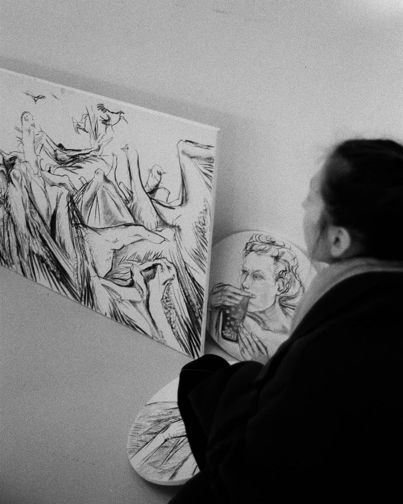
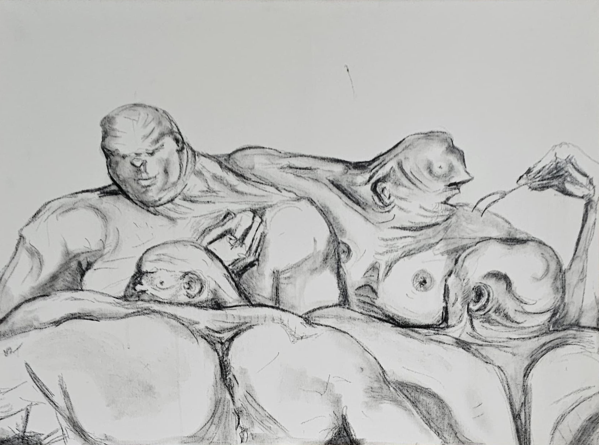
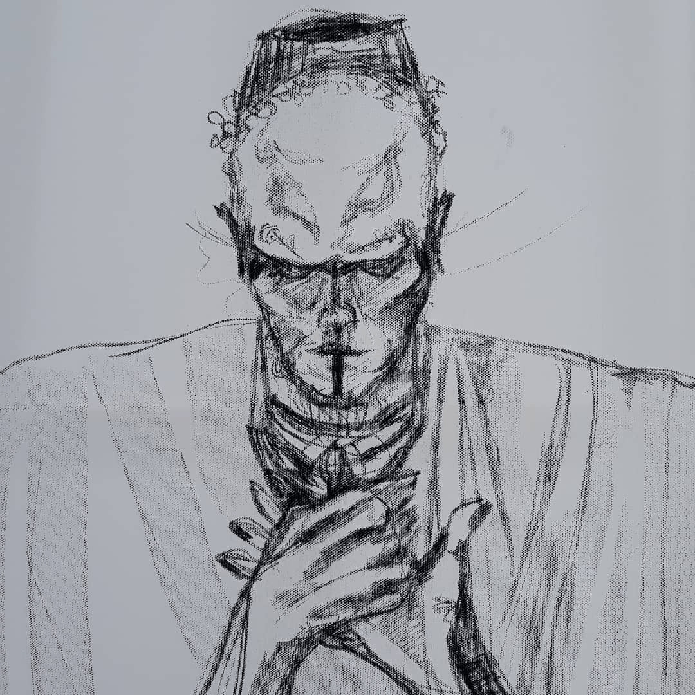
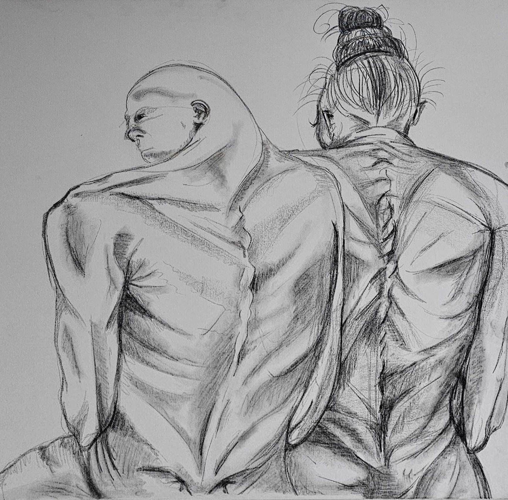

Prvotní letopis
- Chronique de Nestor -
Повѣсть времяньныхъ лѣтъ

Věci se daly do pohybu jako mračna
V překladu zněly jako nové elegie
Portrait
Paris 2021
Maxime Genier

Paris 2022
100 x 73 cm
Détail du portrait
Arras
Une réflexion sur les rites de passage
«C’était une de ces journées des tropiques où les bleus semblent vouloir montrer qu’ils sont assez nombreux pour se partager l’univers. »
- Rouge Brésil, J.C. Rufin

Paris 2022
100 x 73 cm
Peinture Acrylique
Fin du carême
Lucullus dîne chez Lucullus– Lucullus
«Le Tibre sépare les deux gloires : assises dans la même poussière, Rome païenne s’enfonce de plus en plus dans ses tombeaux et Rome chrétienne redescend peu à peu dans ses catacombes.»
- François-René de Chateaubriand

Paris 2023
54 × 73 cm
Peinture Acrylique
Yesod
La communion de Soi
KECAL «Les Artistes peuvent prier autrement que dans les temples»- A. Tarkovski

Paris 2021
100 × 73 cm
Peinture Acrylique
Corps Astraux
Si le corps humain est à l’image de l’esprit qui l’anime...
KECAL «L’endroit le plus érotique d’un corps n’est-il pas là où le vêtement bâille ? »– R. Barthes